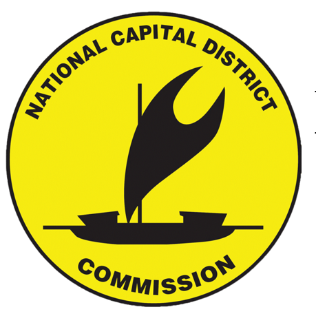

<div class="concept-bar">⚠ DESIGN CONCEPT — for demonstration purposes only. This is <strong>not</strong> the official National Capital District Commission website. The official site is ncdc.gov.pg</div>
<header class="site-header">
  <nav>
    <a href="index.html" class="brand">
      <span class="logo-plate"></span>
      <span class="sub">PORT MORESBY CITY GOVERNMENT</span>
    </a>
    <div class="nav-links" id="navLinks">
      <a href="index.html" data-nav="index">Home</a>
      <a href="building-approvals.html" data-nav="building-approvals">Building Approvals</a>
      <a href="business-licensing.html" data-nav="business-licensing">Business Licensing</a>
      <a href="civil-registry.html" data-nav="civil-registry">Civil Registry</a>
      <a href="waste-environment.html" data-nav="waste-environment">Waste &amp; Environment</a>
      <a href="markets-trading.html" data-nav="markets-trading">Markets &amp; Trading</a>
      <a href="community-grants.html" data-nav="community-grants">Community Grants</a>
      <a href="about.html" data-nav="about">About</a>
      <a href="news.html" data-nav="news">News</a>
    </div>
    <div class="nav-cta">
      <a href="contact.html" class="btn btn-ghost" style="padding:9px 18px;font-size:13.5px;">Contact</a>
      <button class="menu-btn" id="menuBtn" aria-label="Toggle menu">☰</button>
    </div>
  </nav>
</header>
